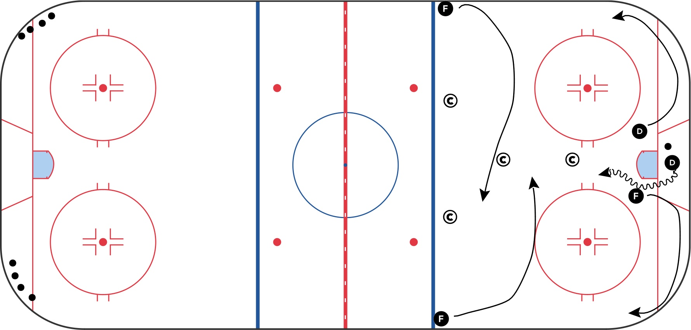
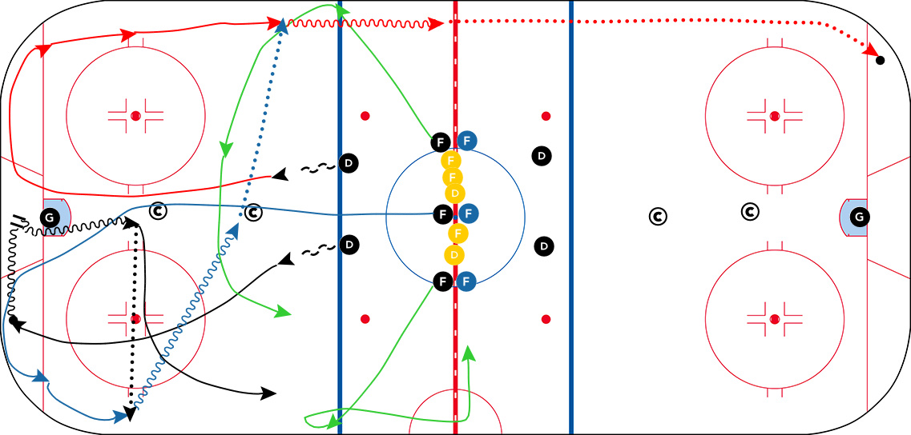
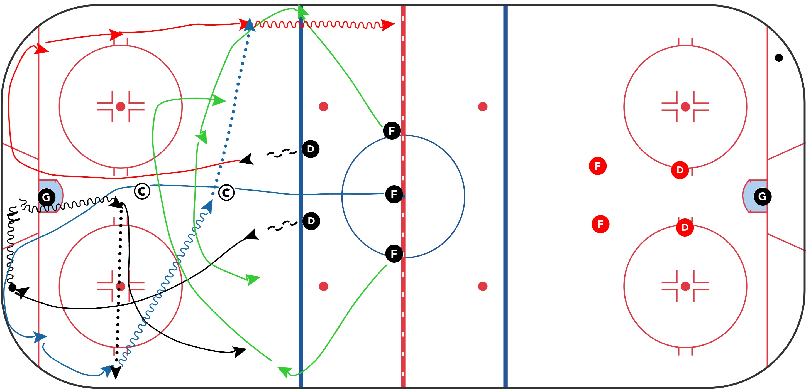
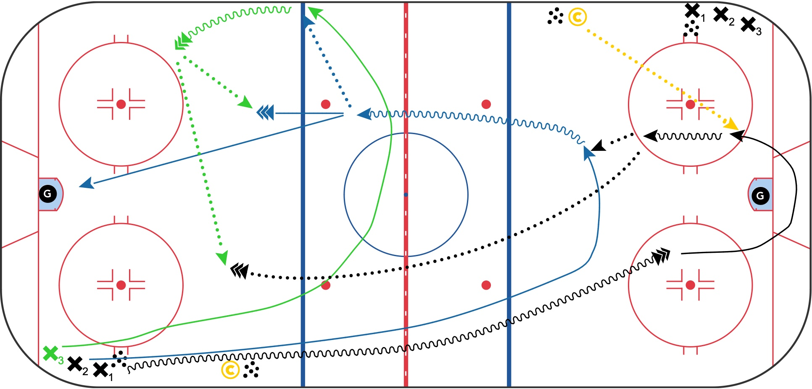
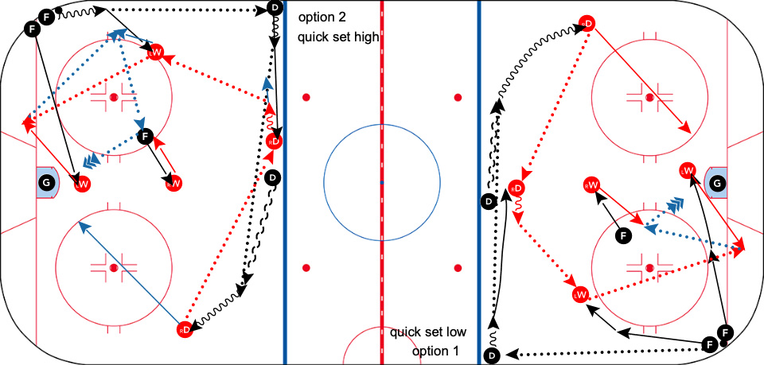
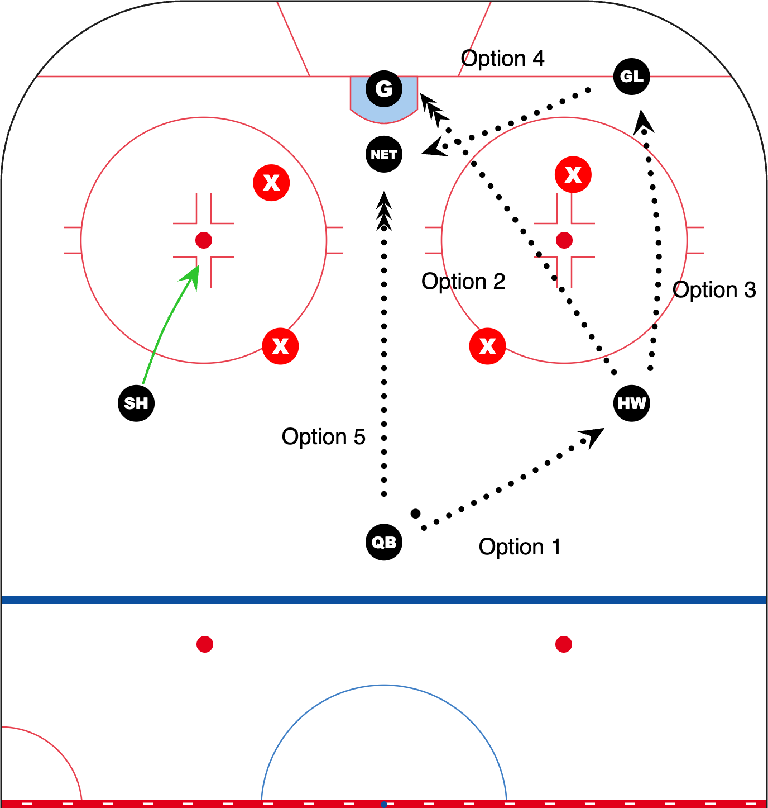
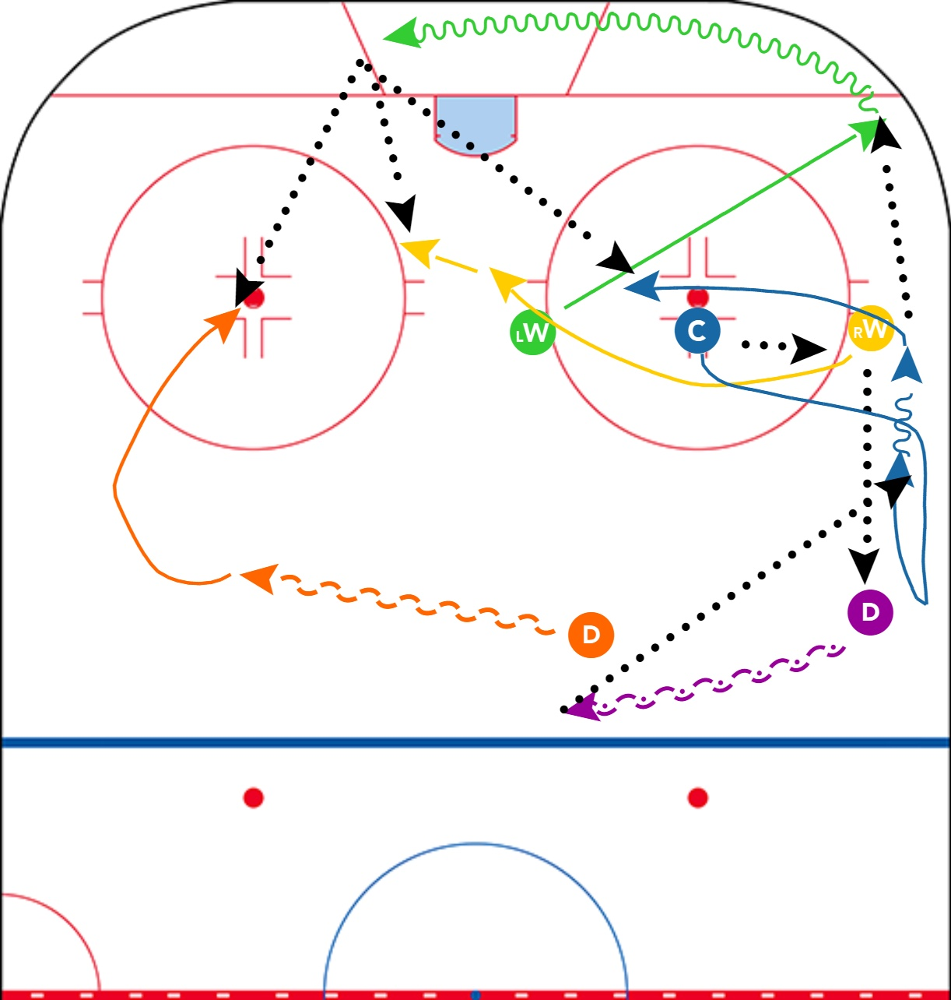
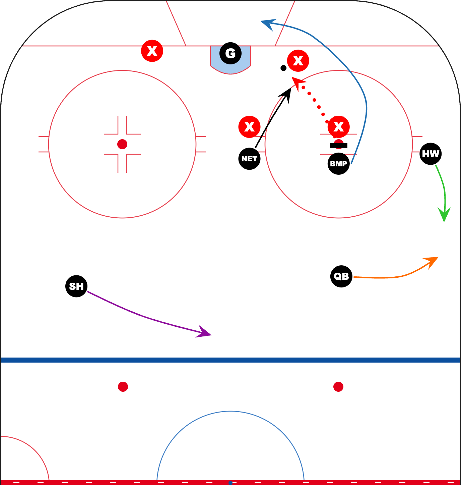

Shoot, Screen, Second Puck - a Simple, Fast, Heavy power play for a gritty team
Power Play Identity: Simple, Fast, Heavy
Our team is gritty and hard-working, so our power play will not depend on perfect seam passes or one elite player. We break out under control, enter with speed or chip and hunt, and once we are set we shoot through traffic and win the second puck. The structure is simple enough that both units can run it at game speed, and every role has a job when the puck is lost.
Our Power Play Promise
We will get set fast, make the PK move before we shoot, put a body in the goalie's eyes on every shot and outwork four players for every loose puck. We will never give up a shorthanded rush by being careless.
Shoot. Screen. Second puck. Five connected.
Four Non-Negotiables
No shot from the top without a screen and a rebound player.
No carry into a stacked blue line: chip it in after the red line and hunt with two.
No blind cross-ice pass through the PK box; move the box first.
No one gets behind our last player. QB or SH is always high.
1. Simple
Two breakouts, two entries, two setups, one faceoff win play and one loss plan. Short calls, clear jobs.
2. Fast
Formation set within 3 seconds of entry and a shot attempt within 5 seconds when the PK is scrambling.
3. Heavy
Net-front presence on every shot, two hunters on every chip and retrieval, and rebounds attacked, not watched.
4. Shot Volume
Low, tippable shots and shot-passes. Our target is four or more attempts per two-minute power play.
5. Five Connected
Every player has a puck job and a safety job. The power play ends with no shorthanded chances against.
SWINGAll five back breakout
SAFETYD1 sets up behind the net
BUMPMiddle to the wide lane
DRIVEMiddle drive to the net
LOW / HIGH1-3-1 quick set options
SPREAD1-3-1 setup
HEAVYUmbrella setup
HABSFaceoff win play
HUNTFaceoff loss pressure
RESETClear: regroup to SWING
Units, Personnel and Interchange
I carry two power play units. Unit 1 runs SPREAD (1-3-1) as its base and Unit 2 runs HEAVY (Umbrella), but both units learn both setups so we can switch on a call against a passive box or an aggressive diamond. Shifts are 50-60 seconds; Unit 1 starts and Unit 2 takes the second half. Roles are fixed inside the formation (QB, HW, SH, BMP, NET) so players know their spot, but on breakouts and retrievals the same jobs-not-positions rule from our 5-on-5 game applies: the closest player becomes the first hunter, the next player becomes support, and QB or SH stays high.
Individual Technical and Tactical Skills
The power play is built on individual skills. These are the technical skills (how a player executes) and tactical skills (how he reads and decides) we need from each position, and they get trained in our skill blocks before they show up in the team drills below.
Shooting
Release, not just power. One-timers off the forehand, catch-and-release, low shots to the far pad and shot-passes for tips.
Passing and Receiving
Tape to tape, on the forehand. Flat and firm passes, saucer passes over sticks, and receiving bad passes in stride or off the skate.
Protection and Retrievals
Win it, keep it. Inside-shoulder puck protection on the wall, stick lifts, body position on loose pucks and first-touch control.
Scanning and Deception
See it before it arrives. Shoulder checks before receiving, look-offs, walking the line to move a PK player, and reading box versus diamond.
Position
Technical skills
Tactical skills
QB Quarterback (Point)
Walking the blue line with lateral crossovers and the puck on the forehand; hard, low, tippable wrist and snap shots; shot-passes for tips; flat passes to the one-timer side; keeping pucks in on rims (glove or stick knock-down).
Reads the high PK forward and moves him before passing; chooses shot versus pass based on NET's screen; is the last line on a shorthanded rush; retrieves and stops behind the net on breakouts.
HW Half-wall Flank (Distributor)
Puck protection on the wall with the inside shoulder; receiving bad passes; faceoff tie-ups; passing to all three lanes (top, middle, low) on the forehand; a quick-release shot from the half-wall to keep the PK honest.
Faces up ice to read the whole box; recognizes when the PK high forward over-commits (go to BMP) or the low PK player cheats up (go low); runs the overload triangle; seals the wall on a faceoff loss.
SH Shooter Flank (Weak-side one-timer)
One-timer on the off-wing with feet set early; catch-and-release; shooting low to the far pad; shot selection when the lane is blocked; acts as the second defenceman on breakouts and the safety on faceoff losses.
Stays in the goalie's blind side and away from the PK stick lane; times the back-door sneak; protects the middle of the blue line on losses and turnovers.
BMP Bumper (Slot)
Quick hands in tight; one-touch shots and passes off both sides; catching pucks in traffic; tipping; winning faceoffs (our draw specialist); deceptive look-offs.
Floats in the soft ice between the PK high forwards; knows when to bump it back rather than force it; drops to the goal line (GL) in HEAVY; takes away the reverse on a faceoff loss.
NET Net-front / Goal-line (Low)
Body position and balance at the top of the crease; tips and deflections at different heights; rebounds; strong retrievals and puck protection below the goal line; quick passes from the goal line to the slot.
Times the screen so he is in the goalie's eyes when the shot comes; slides to the goal line for low plays; first hunter on chips and faceoff losses; slides to the goal line on Quick Set Low and makes plays from behind the net.
Roles, Responsibilities and Personnel
Each power play player has a named role. The role label (QB, HW, SH, BMP, NET) is the marker used in every diagram, so players can see their own jobs in the breakout, entry, setup and faceoff drills.
QB
QuarterbackPoint / top of the formation
Personnel profile
My best puck-moving defenceman: calm, sees the ice and has a heavy, accurate low shot. Ideally a left shot when he plays the top of a right-side overload, so he can open up to the middle.
Responsibilities
SPREAD: top of the 1-3-1; walks the line; feeds HW and SH.
HEAVY: top of the umbrella; shot-passes low for tips.
Breakout: D1 retriever; shoulder-checks, sets up behind the net and picks the side.
Entry: trailer; gets the puck to the top with control.
Faceoffs: strong-side point on HABS (walks the line and moves it back to the wall); pinches the rim on a loss.
HW
Half-wall FlankStrong-side distributor
Personnel profile
Our most creative forward with strong puck protection. Plays his off-wing (a left shot on the right side) so the puck is on his forehand facing the middle.
Responsibilities
SPREAD: runs the play from the half-wall.
HEAVY: strong-side flank and top of the overload triangle.
Breakout: forehand-side swinger (F1).
Entry: wide carrier; checks up onside and takes the bump.
Faceoffs: wall side; takes the win and cuts to the far side of the crease on HABS; seals the wall on a loss.
SH
Shooter FlankWeak-side one-timer
Personnel profile
Our best shooter. Plays his off-wing (a right shot on the left side) to one-time from the top of the circle. Must also be responsible defensively, since he is the safety.
Responsibilities
SPREAD: weak-side flank; crashes the far post on Quick Set Low.
HEAVY: weak-side flank; sneaks to the dot.
Breakout: D2; swings to the opposite corner.
Entry: wide lane on the weak side.
Faceoffs: jumps down to the weak-side dot for the one-timer on HABS; middle safety on a loss.
BMP
BumperSlot / middle of the formation
Personnel profile
A smart, quick-handed centre who wins draws and can play in traffic. Shoots either way off one touch and does not panic in tight spaces.
Responsibilities
SPREAD: slot; one-timer on Quick Set Low or Quick Set High.
HEAVY: drops to the goal line as GL.
Breakout: blue-line forward (F2); self-adjusts up the boards.
Entry: middle drive.
Faceoffs: takes the draw; loops to the wall on HABS; takes away the reverse on a loss.
NET
Net-frontGoal-line / low player
Personnel profile
Our heavy, competitive forward: strong on his skates, good hands in tight, and willing to take a cross-check to stay in the goalie's eyes. He sets the tone for our identity.
Responsibilities
SPREAD: net front; slides to the goal line for low plays.
HEAVY: screen at the top of the crease.
Breakout: blue-line forward (F3); self-adjusts up the boards.
Entry: late option, then the net front; first hunter on chips.
Faceoffs: inside position; goes to the goal line and makes the play from behind the net on HABS; first hunter on a loss.
Handedness Rule
Flanks play their off-wing. A right shot on the left flank (SH) can one-time with the puck coming across; a left shot on the right half-wall (HW) holds the puck on his forehand, facing the middle. If personnel forces a strong-side shooter, we flip the formation to the other side rather than change the role.
Selection Criteria
Earned: power play spots are earned with 5-on-5 effort and execution in practice. Our identity does not change on special teams.
Role fit over reputation: a heavy, willing net-front player is chosen ahead of a skilled player who will not go to the net.
Depth: every role has a second player trained in it, so a penalty or injury does not break the unit.
PP Breakouts: Two Drills
On the power play the PK usually sends one forechecker and sets up in the neutral zone. That gives us time, so both breakouts start with control: we bring all five back and swing (Drill 1), and we build the timing of the retrieval, the safety zone behind the net and the exit through a continuous breakout (Drill 2). Both drills come from our association's CoachThem drill bank and are run in both directions.
1
PP Breakout 1 - Five-Back Swing
Drill 1: Full Ice Power Play Breakout - All 5 Back
Objective: Break out 5-on-4 with all five players back, connected and patient, then carry the puck full ice and get set in our power play formation.
SupportPuck ControlTransition

Setup
Full ice, 5-on-4 where the coaches are the opposition. All five PP players start in our end: QB (D) with the puck behind the net, SH (the other D) at the post, HW low beside the net, and BMP and NET on our blue line, one on each side. Four coaches stand in our zone and the neutral zone as the PK, taking away lanes with their sticks. Spare pucks sit in the far corners so the next unit can come back the other way.
Detailed Drill Instructions
All five back and moving: QB holds the puck behind the net until all four teammates are moving. SH leaves the post and swings up into the near corner and up the wall, HW curls from beside the net into the far corner and up that wall, and BMP and NET leave the blue line and swing back down through the middle. Nobody stands still waiting for the puck.
Communicate the read: QB scans the coaches before he steps out. The swinging players call for the puck ("WALL", "MIDDLE", "STAY") so QB knows who is open without searching. The coaches change which lane they take away each rep.
Step out and move it: QB carries out the side of the net, draws the nearest coach and passes to the first open swinger: the D up the wall, a forward curling through the middle or the forward on the far wall. If the coaches back off, QB keeps it and skates.
Be patient with the puck: If every lane is closed, QB goes back behind the net and the group swings again. On the power play we have time; we never force the puck into a coach's stick.
Attack and set up: Once the puck is out, all five attack full ice with width, enter the far zone and get into SPREAD (1-3-1) within 3 seconds. The rep ends with a shot from our formation, and the next unit starts from the far corner and comes back the other way.
Progression, scoring and rotation: Start with the coaches standing still to learn the routes, then give them active sticks, then let one coach pressure QB behind the net. Finish by replacing the coaches with four PK players (5-on-4 live). Score 1 point for a controlled exit, 1 for a controlled entry and 1 for getting set and shooting within 15 seconds of the first pass. Two units alternate; plan 6-8 minutes.
3 Key Teaching Points
Breakout: all five come back and are swinging with speed before QB moves the puck.
Communication: the swinging players call for the puck so QB knows the open lane before he steps out.
Puck control and patience: if nothing is open, go back behind the net and swing again. Never force it into a stick.
2
PP Breakout 2 - Continuous Retrieval
Drill 2: Power Play Breakout Continuous
Objective: Retrieve a dump-in quickly, set up behind the net, and time the exit so three players cross the goal line together, then dump it in for the next unit.
SupportPuck ControlTransition

Setup
Full ice, with two PP units lined up on either side of the red line, one unit facing each end. The puck is dumped into one end and that unit gets back quickly to set up. Two coaches in the zone act as the first forecheckers, and the goalie stays in net. The drill runs continuously with one puck.
Detailed Drill Instructions
Get back and shoulder-check: When the puck is dumped in, the unit hustles back. QB (D1) shoulder-checks on the retrieval so he knows where the forechecker and his support are before he touches the puck.
Safety zone: QB picks up the puck and goes behind the net, which is our safety zone. HW (F1) swings to his forehand side, SH (D2) goes to the opposite corner, and BMP and NET (F2 and F3) hustle back to our blue line.
Time the exit: QB picks the best side and cuts the net hard, timing it with the swinging D and the swinging forward so all three cross the goal line together. If QB leaves early or late, the timing is gone and the forechecker gets a free run at him.
Skate at the forechecker, pass flat: QB skates at the first forechecker to freeze him, then makes a flat pass to either swinger and fills the lane he passed to. No cross-ice passes in our zone.
Wingers self-adjust: When QB steps out from behind the net, the blue-line winger on that side takes off up the boards and adjusts his route to the support he sees. The puck moves up ice through the swingers, and the player who gets it at speed carries it over the red line.
Dump and go: At the red line, the carrier dumps the puck into the other end and the next unit starts the same breakout from there. The drill keeps going with one puck.
Progression, scoring and rotation: Start with no forecheck to learn the timing, then let the coaches forecheck passively, then have them take away one swinger each rep. Track how many reps cross the goal line together and exit with one pass. Rotate units every two reps; plan 6-8 minutes.
3 Key Teaching Points
Timing and shoulder check: D1 shoulder-checks on the retrieval, and three players cross the goal line together.
Don't rush the pass: skate at the first forechecker, then pass flat to the swinger.
No cross-ice passes in our own zone.
PP Entries: Two Drills
The PK's neutral-zone setup decides our entry. When the PK sits back in its box, we carry in with control and get set (Drill 3). Our forwards learn the entry lanes through a three-forward timing drill: a wide carrier who checks up, a middle drive and a late option (Drill 4). When the PK stacks the blue line, we chip it in and hunt with two, which suits our gritty team.
1. CARRY (Controlled)
The PK gives us a gap. Carry in wide with speed, BUMP to the middle or wide lane, DRIVE the middle and keep a late option, then get set in 3 seconds.
2. CHIP (Heavy)
Four PK players stand up at the line. Chip it deep after the red line and hunt with two, with QB as the high safety.
3. RESET (Patience)
No lane and no recoverable chip: pass back to QB in the neutral zone, reload underneath and come again. Never force a turnover into a shorthanded rush.
3
PP Entry 1 - Breakout to Entry and Setup
Drill 3: Power Play Breakout into Setup
Objective: Connect the timed breakout to a controlled entry and a set formation against a four-player PK box, so the timing we build in Drill 2 carries all the way into the zone.
SupportPuck ControlTransition

Setup
Full ice. The PP unit (two D, three F) starts at our blue line and the red line, with the puck in our corner and two coaches as the first forecheckers. In the far end, four PK players (two forwards and two D) set up in a box in front of their goalie.
Detailed Drill Instructions
Breakout first: Same start as Drill 2: QB retrieves with a shoulder check and sets up behind the net, HW swings to his forehand side, SH goes to the opposite corner, and BMP and NET hustle back to our blue line.
Timed exit: QB cuts the net hard so the three players cross the goal line together, skates at the first coach and passes flat to a swinger, then fills the lane he passed to. No cross-ice passes in our zone.
Build speed through the neutral zone: The puck moves up through the swingers and the player who has it at speed carries over the red line. The others fill lanes: one wide on each side, one driving the middle and QB trailing.
Enter against the box: The PK box sits back, so we enter with control. The carrier attacks the blue line wide; if a PK forward steps up, he moves it to the middle player or back to the trailer. If the line is stacked, he puts it into the corner and the nearest two players hunt it.
Set up in 3 seconds: Once we are in, everyone goes straight to their SPREAD spots: QB at the top, HW on the half-wall, SH on the weak side, BMP in the slot and NET at the net. The puck goes to the top with full control before we attack.
Finish the rep: First shot through traffic; rebounds are live until the PK clears or we score. The next unit starts the breakout at the other end.
Progression, scoring and rotation: Start with the PK box standing still, then let it pressure the carrier at the blue line, then play 5-on-4 live with the PK allowed to clear. Score 1 point for an exit with three players crossing the goal line together, 1 for a controlled entry and 2 for getting set and shooting with a screen. Plan 8 minutes.
3 Key Teaching Points
Timing starts in our zone: shoulder check, three cross the goal line together, and keep the speed through the neutral zone.
Don't rush the entry: carry it in with control and get the puck to the top before attacking the box.
No cross-ice passes in our zone or at the PK blue line; move it up the wall and use the middle support.
4
PP Entry 2 - Forward Lanes and Timing
Drill 4: Vancouver 3 Man Entry Options Full Ice
Objective: Train our three PP forwards to time their routes, fill lanes and enter with three options: the wide carrier, the middle drive and the late player. This is a 3-forward rush drill I use for our power play entries.
SupportTransitionPuck Control

Setup
Full ice, with three forwards (X1, X2, X3) in opposite corners so both ends run at the same time. A coach with pucks stands on the wall in each half, with goalies in both nets. How the lanes match our power play: X3 is the wide carrier (HW or SH), X2 is the middle driver (BMP) and X1 is the shooter who becomes the late option (NET).
Detailed Drill Instructions
Both sides go together: X1 skates the length of the ice with the puck and shoots in stride on the far goalie. X2 and X3 leave at the same time on their own routes, and the other end does the same.
X1 circles and gets a new puck: After the shot, X1 skates behind the net and receives a pass from the coach on the wall, then turns back up ice.
X2 delays and takes the middle: X2 follows the play and delays his timing so he is in the middle when X1 passes to him. X2 then carries up the middle with speed.
X3 checks up and gets the bump: X3 crosses the ice and checks up at the far blue line, staying onside. X2 bumps the puck out to X3 wide and keeps going with a hard middle drive to the net.
X3 reads three options: X3 attacks wide and chooses: shoot in stride, pass to X2 driving the middle, or pass to X1 coming in late. The goalie plays it live and the rebound stays live.
Progression, scoring and rotation: Start at half speed to learn the routes, then go full speed. Add one defender at the far blue line who must be beaten with the bump and middle drive, then two defenders (3-on-2). Score 2 points for a goal and 1 for a shot from the slot. Rotate X1, X2 and X3 so every PP forward learns every lane; plan 8 minutes.
3 Key Teaching Points
Shoot in stride; don't slow down to shoot.
Timing and filling lanes: X2 delays to arrive in the middle, and X3 checks up onside at the blue line.
Communication: call for the bump and the drive so the carrier knows where his support is.
Offensive Zone Setups: SPREAD (1-3-1) and HEAVY (Umbrella)
Two setups with the same five roles. SPREAD (1-3-1) stretches the PK box and gives us a one-timer, a middle option and a low option. HEAVY (Umbrella) puts three shooters up top and two bodies at the net. We use it against a box that collapses to protect the slot, and when we need shot volume late in games.
Responsibilities of Each Player in Both Setups
Role
SPREAD (1-3-1) - primary setup
HEAVY (Umbrella) - second setup
On every shot
QB
Top of the zone. Walks the line to move the high PK forward; feeds HW and SH; shoots low and hard when the lane opens.
Top centre. Main shooter and shot-passer from the middle; switches the puck flank to flank.
Stays above the puck as the safety and keeps pucks in.
HW
Right half-wall (left shot). Faces up ice; puts it low to NET (Quick Set Low) or finds BMP in the slot (Quick Set High).
Strong-side flank at the top of the circle. One-timer option and top of the overload triangle with GL and QB.
Second layer for the rebound when the shot comes from the other side.
SH
Weak-side flank (right-shot D). Feet set for the one-timer; crashes the far post when the puck goes low on Quick Set Low.
Weak-side flank. One-timer on the switch; sneaks to the weak-side dot when the puck is low.
Back-door rebound when the puck is on the strong side; otherwise returns high.
BMP
Slot between the dots. Slides down for the one-timer on Quick Set Low or takes the slot one-timer on Quick Set High.
Drops to the strong-side goal line as GL. Low option in the overload and passes to NET at the side of the net.
Attacks loose pucks around the crease and the slot.
NET
Net front (left shot); slides out toward the goal line and presents his stick when the puck reaches the half-wall, then passes across to BMP or back to HW.
Top of the crease screen; tips shot-passes; steps to the far post for the back door.
In the goalie's eyes, stick on the ice, first on the rebound.
Drill 6 is a CoachThem drill diagram of our own set-up; the other drills use original CoachThem drill-bank images. In Drill 6 our power-play players are labelled by role (QB, HW, SH, NET, and GL for BMP playing low), the penalty kill is shown as red X players and G is the goalie.
5
Offensive Zone Setup 1 - Primary Unit (SPREAD)
Drill 5: Power Play - 1-3-1 - Options 1 & 2
Objective: Get the puck to the top with full control, spread the PK by moving it D-to-D and back to the top, then run our two set plays out of the 1-3-1 SPREAD: Quick Set Low and Quick Set High.
Puck ControlSupportPressure

Setup
Half ice, run in both ends (the diagram shows Option 2 in one end and Option 1 in the other). The unit starts by getting the puck to the top in the middle, then sets the 1-3-1: QB at the top, HW (a left shot) on the right half-wall, NET (a left shot) at the net front, BMP (a right shot) in the slot and SH (a right-shot D) on the weak side. Four PK players or coaches start passive, then go live.
Detailed Drill Instructions
Control at the top: Get the puck to the top in the middle with full control. We spread the ice by going D-to-D and then back to the top. Having more players than the PK around the puck is how we get control.
Move the PK: Work the puck around the perimeter, QB to HW on the half-wall, so the PK has to move.
Option 1 - Quick Set Low: When the puck reaches HW on the right half-wall, NET slides out from the net front toward the goal line and presents his stick. If the PK does not take that pass away, HW puts it down low to NET. BMP slides down for a one-timer and NET passes across to him. Once the puck goes low, SH (the weak-side right-shot D) crashes the far post for the rebound.
Option 2 - Quick Set High: If Quick Set Low is not there, NET makes one more pass back to HW on the half-wall, and HW finds BMP in the middle of the slot for a one-timer.
Shot and rebound: Every shot has NET or SH at the net. QB stays above the puck as the safety, and we hunt every rebound and missed shot.
Progression, scoring and rotation: Walk through both options 5-on-0, then 5-on-2 against the low PK pair, then 5-on-4 live where the PK decides what to take away and we must pick the open option. Score 1 point for a one-timer on goal and 3 for a goal; the PK earns 2 for a clear. Switch the formation to the other side so both halves of the unit learn it.
3 Key Teaching Points
Outnumber the opponent to get control at the top before we attack.
Move the puck to the point (D-to-D and back to the top) to spread the PK.
Move the puck to the middle: both options finish with a one-timer from the slot.
6
Offensive Zone Setup 2 - Second Unit / Heavy Option
Drill 6: HEAVY (Umbrella) - Shots Through Traffic and the Overload Triangle
Objective: Create volume from the top with two bodies at the net, and use a strong-side overload triangle to get the puck back to the shooters.
PressureSupportPuck Control

Setup
Half ice, 5-on-4 plus a goalie. Three high and two low: QB at the top centre, HW on the right flank at the top of the circle, SH on the left flank at the top of the circle, NET screening at the top of the crease, and BMP dropped to the strong-side goal line as the low player (GL). The puck starts with QB.
Detailed Drill Instructions
Set the umbrella: QB, HW and SH spread across the top, inside the blue line, roughly at the dot line on each side. NET owns the top of the crease, and GL starts on the strong-side goal line. Our spacing creates three shooting lanes from the top and two players to finish around the net.
Shoot from the top with traffic: QB walks to open a lane and shoots or shot-passes low (Option 5) so NET can tip it. QB moves the puck to HW (Option 1) for a one-timer through the screen (Option 2) when the high PK forward over-commits. Every shot is low enough for a deflection or a pad rebound.
Overload the strong side: HW, GL and QB form a triangle on the strong side. HW goes down to GL on the goal line (Option 3). GL can bump it back to HW, take it to the net or slide it to NET at the side of the net (Option 4). The low PK defender gets pulled toward the wall, which opens the net front.
NET's job: NET screens at the top of the crease and moves with the puck to stay in the goalie's eyes. He presents his stick for tips and fights for inside position on rebounds. When the puck goes low, he steps to the far post for the back-door play.
Weak-side flank sneak: When the puck is below the hash marks on the strong side, SH sneaks down toward the weak-side dot for a back-door one-timer or rebound. When the puck comes back up, he returns to the top so the umbrella stays intact.
Change the side: If the PK collapses to the strong side, QB switches the puck to SH, NET and GL rotate (GL to the weak-side goal line, NET stays in front), and we attack the other side with the same triangle.
Progression, scoring and rotation: Start 5-on-0, then 5-on-2 where the PK D must box out NET, then 5-on-4 live. Scoring: 1 point for every shot from the top that reaches the net, 2 points for a goal off a tip, screen or rebound, and 2 points for the PK for a clear. Add a challenge: four shot attempts in 40 seconds. Plan 8 minutes; rotate a new player into GL every repetition.
3 Key Teaching Points
Shots get through: walk to a lane and shoot low and tippable.
Keep two bodies at the net for the screen, the tip and the rebound.
The overload triangle uses short passes and quick decisions, and the puck goes back to the top.
Offensive Zone Faceoffs: Win and Loss Strategies
Most power plays start with an offensive-zone faceoff, so we plan both outcomes. On a win we run HABS, a set play that moves the puck wall to point to wall to goal line and creates three options from behind the net. On a loss, all five players have a job that takes away the PK's clear (HUNT), and if the puck gets out we go straight to RESET and SWING.
Win Strategy - HABS
Wall, point, wall, goal line, behind the net. BMP wins it to HW on the wall, HW to QB at the point, QB walks the line and moves it back to BMP on the wall, BMP to NET at the goal line, and NET carries behind the net to find SH at the weak-side dot, HW at the back door or BMP in the slot. If the wall is taken away, we go D-to-D and set up SPREAD.
Loss Strategy - HUNT
Take away rim, reverse and flip. NET hunts the PK D inside-out, BMP takes away the reverse, HW seals the wall, QB pinches the rim and SH is the middle safety. If we recover in five seconds, we set up; if the PK clears, we RESET.
Drill 8 is a CoachThem drill diagram: our power-play players are labelled by role (BMP, HW, NET, QB, SH), the penalty kill is shown as red X players, and the black bar marks the faceoff.
7
Offensive Zone Faceoff - Win Strategy
Drill 7: Habs Faceoff
Objective: Win the right-circle draw and use a set series of passes (wall, point, wall, goal line, behind the net) to move the PK and create three scoring options from behind the net.
Puck ControlSupportPressure

Setup
Half ice, faceoff on the right dot in the offensive zone. BMP (C) takes the draw, HW (RW) lines up on the wall side, NET (LW) lines up on the inside, QB (the strong-side D) is at the right point and SH (the weak-side D) is on the left side of the blue line. Run it 5-on-0 to learn the routes, then against the PK.
Detailed Drill Instructions
Win to the wall: BMP wins the draw to HW on the wall side. HW moves it straight down to QB at the point.
QB walks the line: QB walks across toward the middle of the blue line to pull the PK up, while BMP loops out to the wall below the circle. QB passes back to BMP on the wall.
Up the wall and low: BMP carries up the wall toward the goal line and passes down to NET, who has cut across from the inside position to the right goal line.
Behind the net: NET carries behind the net to the far side. At the same time, HW cuts across the low slot to the far side of the crease, BMP comes off the wall into the slot by the right dot, and SH walks across and jumps down to the left dot.
Three options: From behind the net, NET finds the open player: SH for a one-timer at the weak-side dot, HW in front of the far side of the crease, or BMP in the slot. The two players who don't get the pass go to the net for rebounds.
Progression, scoring and rotation: Learn it 5-on-0 at half speed, then add PK players one at a time, then play it live 5-on-4. If the PK takes the wall away, QB moves it D-to-D to SH and we set up SPREAD instead. Score 2 points for a shot within 8 seconds of the draw and 3 for a goal. Alternate who takes the draw so every centre and winger learns the routes.
3 Key Teaching Points
Win the draw to the wall and get it to the point right away.
Time every route with the puck: BMP loops to the wall as QB walks the line, and NET cuts to the goal line as the puck comes up the wall.
From behind the net, read the PK and hit the open player (weak-side one-timer, back door or slot); everyone else goes to the net.
8
Offensive Zone Faceoff - Loss Strategy
Drill 8: HUNT - Pressure the Loss and Protect the Line
Objective: When we lose the draw, take away the PK's three clearing options (rim, reverse or flip) and win the puck back within five seconds without giving up a shorthanded rush.
PressureSupportTransition

Setup
Right-circle faceoff with the same personnel as Drill 7: BMP takes the draw, HW on the wall-side hash, NET on the inside hash, QB at the top of the circle and SH on the weak side. The coach tells the PK centre to win the draw back to his defenceman beside the net. In the first rounds, the coach also tells the PK D which clear to try: rim up the strong wall, reverse behind the net or flip up the middle.
Detailed Drill Instructions
Know the threats: A lost draw goes back to a PK D on the strong side of the net. His options are the rim up the right wall, a reverse behind the net to his partner, or a flip over the middle. Each of our five players takes away one of these before he can use it.
NET is the first hunter: From the inside hash, NET attacks the PK D on an inside-out angle with his stick in the lane to the middle. He forces the PK D to the boards, where our support is waiting, and finishes the hit legally.
BMP takes away the reverse: BMP ties up the PK centre for a one-count, then skates toward the net-side post and behind the net so the reverse to the PK partner is gone.
HW and QB seal the wall: HW releases off the wall-side hash and seals the half-wall so a rim cannot get past him. QB pinches down the boards at the blue line as the second layer on a rim, but only because SH has slid to the middle of the blue line.
SH is the safety: SH slides from the flank to the middle of the blue line to stop the flip and to protect against a shorthanded rush. No PK player gets behind SH.
Win it back or RESET: If we recover the puck within five seconds, we move it up to QB or HW and set SPREAD. If the PK clears, we call "RESET", QB retrieves, and we go straight into our all-five-back SWING breakout (Drill 1). We lose seconds, not structure, and no reaching penalties: we move our feet.
Progression, scoring and rotation: Start with coach-called clears (rim, reverse, flip) at half speed, then go to a live 5-on-4 faceoff. Add a full-ice continuation: on a clear, the coach rims a new puck and the unit must break out with the all-five-back SWING (Drill 1). Scoring: 2 points for the PP for a recovery inside 5 seconds, 2 points for the PK for a clear, and 3 points for the PK for a shorthanded shot. Plan 6 minutes.
3 Key Teaching Points
Hunt with a purpose: NET on the puck, BMP on the reverse, HW on the wall.
QB and SH protect the line; QB pinches only when SH is in the middle.
If the PK clears, RESET right away. We give up seconds, not structure.
How I Evaluate Power Play Performance
I judge the power play on results and on process. PP% tells me whether we are scoring, but on its own it is a small and noisy number, so I also track the habits that produce goals. An assistant coach tracks live on a simple sheet, and I confirm every power play on video tagging the same day.
PP Percentage
Power play goals divided by power play opportunities, tracked on a rolling 10-game window so one hot or cold weekend does not drive decisions.
Target: above 20%
Shot Attempts per 2 Minutes
All shot attempts (on goal, blocked and missed) divided by power play time, scaled to two minutes. This measures our shot-volume identity.
Target: 4+ per 2:00
Slot Shots
Shots from inside the dots or the home-plate area, including tips and rebounds. These show whether volume is turning into quality.
Target: 2+ per PP
Entry Success Rate
Controlled entries plus chips recovered within 3 seconds, divided by entry attempts. Entry type (carry, chip, RESET) is tagged on each one.
Target: 70%+
Time in Zone
Seconds of set offensive-zone possession during the power play. Long breakouts and repeated clears show up here first.
Target: 60%+ of PP time
Retrievals Won
Loose pucks won by the PP after chips, rebounds and missed shots, divided by total retrieval battles. This is our "heavy" metric.
Target: 55%+
Shorthanded Goals and Chances Against
Every shorthanded shot or rush against is reviewed to find the cause: a lost safety, a forced pass or a bad change.
Target: 0 goals, 1 or fewer chances per game
Faceoffs and Breakout Exits
Offensive-zone faceoff win % on the PP and recoveries within 5 seconds after a loss, plus controlled breakout exits after a clear.
Target: 55%+ wins, 80%+ exits
Power Play Game Scorecard and Video Review
What I track
How it is collected
What it tells me
Response if below target
Results
PP goals, opportunities, PP% (game and rolling 10 games); goals and chances against while shorthanded.
Whether the power play is changing games and staying safe.
Check the process numbers before changing personnel or the setup.
Volume and quality
Live tally of shot attempts with location (slot or outside), and whether NET was screening and a rebound player was present.
Whether our shoot-and-screen identity is showing up.
Add HEAVY reps and shot-clock games (Drills 5 and 6); review NET's timing.
Transition
Each breakout and entry tagged on video: breakout side and timing (three across the goal line together), carry, chip or RESET entry, and success or fail.
Where we lose time: our own zone, the neutral zone or the blue line.
Repeat Drills 1-4 against the PK's actual forecheck and add a pre-scout of the opponent's neutral-zone setup.
Habits
Retrievals won, recoveries after faceoff losses, time to first shot after a faceoff win.
Whether we are winning the second puck: the heavy part of our identity.
Add retrieval races and HUNT reps; recognize hunters in the video session.
Player feedback
Video clips tagged by role (QB, HW, SH, BMP, NET), with a short review with each unit every week: two clips of good habits, two teaching clips and one clip of the opponent's PK.
Whether each player understands and executes his role.
Individual skill-block focus (one-timers, tips, walking the line) in the next week's practice plan.
Bottom line: our power play reflects who we are: a gritty team that breaks out with control, enters with speed or chips and hunts, shoots through traffic and wins the second puck. If we are above 20%, generating four or more attempts every two minutes and giving up nothing shorthanded, the system is working. If we are not, the process numbers tell me which drill to run next.
Drill Design References
Six drills (1-5 and 7) come from my association's CoachThem drill bank; the diagrams are the CoachThem originals, and the instructions, role names, progressions and teaching points are my adaptations for our Simple, Fast, Heavy identity. Drills 6 (HEAVY) and 8 (HUNT) are original adaptations, shown as CoachThem drill diagrams, informed by the public resources below; no drill text has been copied word-for-word. Articles marked as member articles may need a subscription to read in full.
Drills 1-5 and 7 come from our association's CoachThem drill bank and are adapted with my own teaching points, role names and progressions: Full Ice Power Play Breakout - All 5 back; Power Play Breakout Continous; Power Play Breakout into Setup; Vancouver 3 Man Entry Options Full Ice; Power Play - 1-3-1 - Options 1 & 2; Habs Faceoff.
The High Performance 1 framework and Long-Term Player Development guidance (Train to Compete) used to set practice volume, decision-making demands and progressions.